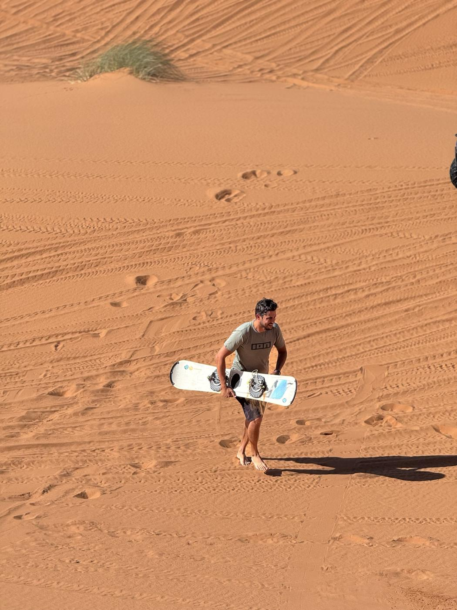
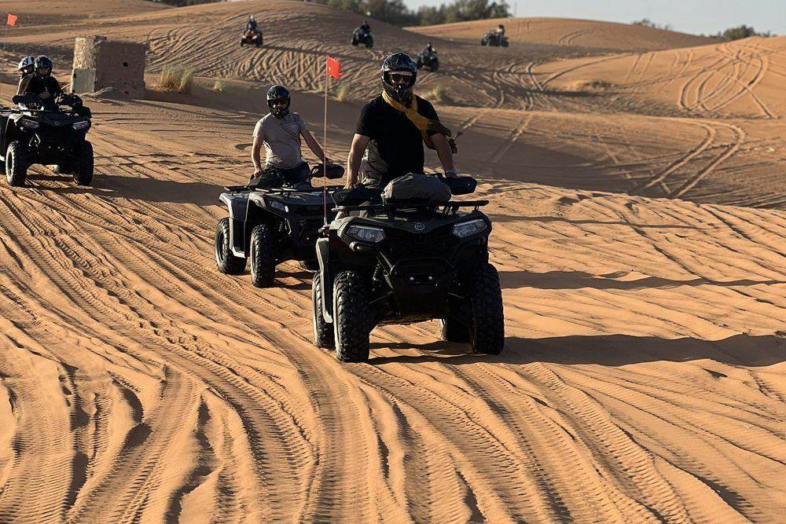
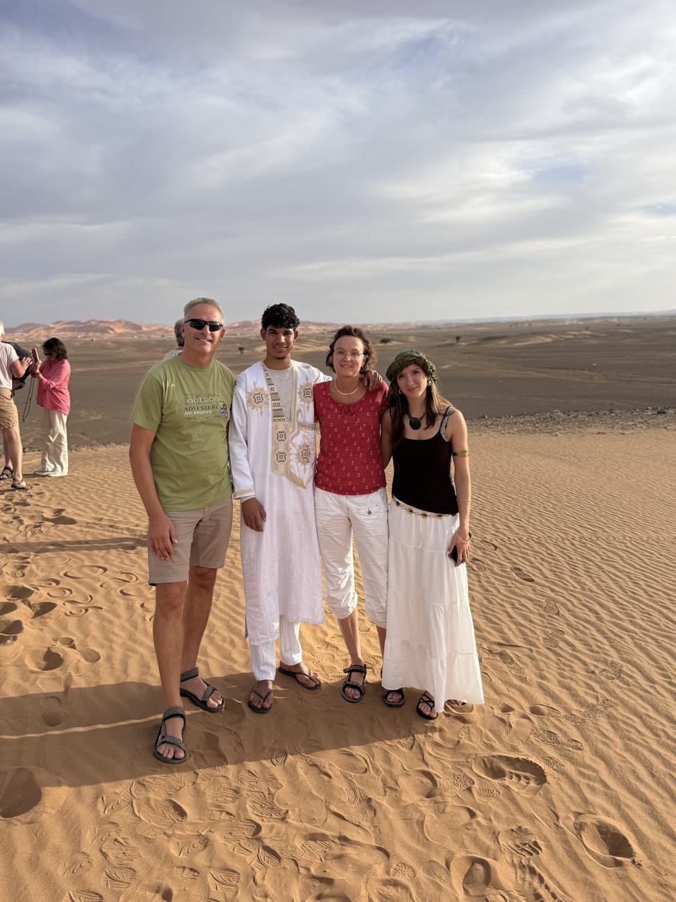

Merzouga is the gateway to Erg Chebbi, the most beautiful sea of dunes in Morocco: golden-orange sand piled into waves up to about 150 metres high, stretching for more than 20 kilometres along the Algerian border. Most visitors come for one night in a camp, but the region has much more to offer: music, nomad life, fossils, oases, lakes, adventure and some of the darkest skies in the world.
We live in Erfoud, half an hour from the dunes, and we spend our days here with our guests. These are the 15 best things to do in Merzouga, with our practical tips on how many nights to stay, when to come and how to get there.
The desert classics
1. Ride a camel into the dunes at sunset
The iconic Sahara experience. Late in the afternoon, a caravan leaves the edge of the village and walks slowly into the dunes, as the sand turns from gold to orange and red. The ride to the camps usually takes 1 to 1.5 hours, with a stop on a crest to watch the sun go down. Each traveller has their own camel; children can ride with a parent.

2. Sleep in a desert camp
Spending the night among the dunes is the heart of the trip: dinner under a tent, Berber drums around the fire, and silence. Camps range from simple to luxury, with private bathrooms and real beds. Compare them in luxury or standard desert camp.
3. Watch the sunrise from the top of a dune
Get up before dawn, climb the dune behind your camp and watch the light spread over the sea of sand. It is often the moment travellers remember most. In winter, bring a hat and gloves.
4. Climb the great dune
The highest dunes of Erg Chebbi rise about 150 metres above the plain. The climb is steep and takes about 45 minutes to an hour, but the view over the whole erg, the hamada and the Algerian mountains is spectacular. Go early in the morning or late in the afternoon. Learn more in our guide to Erg Chebbi.
Adventure in the dunes
5. Sandboarding
Slide down the dunes on a board, standing or sitting. It is easy, fun for all ages, and the soft sand makes falls painless. Read everything in our sandboarding guide.

6. Quad biking (ATV)
Ride a quad through the dunes and around the edge of the erg with a local guide, for one or two hours. It is the most popular adrenaline activity in Merzouga. Choose a serious agency with helmets and a guide in front of you.

7. Take a 4×4 tour around Erg Chebbi
A half-day or full-day 4×4 loop around the erg is the best way to understand the region: the black stone desert (hamada), small oases, abandoned mines, nomad camps and viewpoints over the dunes.
Culture and local life
8. Listen to Gnawa music in Khamlia
The village of Khamlia, 7 km south of Merzouga, is home to Gnawa families whose music comes from West Africa. Drink tea and listen to the drums and iron castanets: a powerful moment. Read our article on Khamlia and Gnawa music.
9. Visit a nomad family
Some families still live in tents in the desert with their goats and camels. Sharing a glass of tea with them is a simple and real encounter. Read visiting a nomad family in the Sahara.
10. Eat a medfouna, the Berber pizza
The local speciality: a large bread stuffed with spiced meat and onions and baked in the hot sand. Discover it in our article on medfouna, the Berber pizza.
11. Explore Rissani and its market
Thirty minutes from Merzouga, Rissani was once the end of the caravan routes and is the cradle of the Alaouite dynasty, the royal family of Morocco. Visit the mausoleum of Moulay Ali Cherif (from the outside for non-Muslims), the old ksars of earthen walls, and the traditional market, busiest on Sundays, Tuesdays and Thursdays, with its donkey “parking” and its spice and date stalls.
12. Discover the fossils of Erfoud
The region was once the bottom of an ocean, and its rocks are full of fossils: ammonites, trilobites and orthoceras. Visit a workshop where the stone is cut and polished. Learn more in our fossil guide.
Nature and the night
13. Look at the stars
Far from any city, with very dry air, the sky above Erg Chebbi is one of the darkest you will ever see. On a moonless night, the Milky Way is clearly visible with the naked eye. Plan your trip around the new moon if stars are important to you.
14. See the seasonal lake of Dayet Srji
After good rains, a shallow lake appears at the foot of the dunes near Merzouga. In some years it attracts birds, sometimes even flamingos. It may be dry, so ask your guide before going.
15. Try a traditional sand bath (summer)
In July and August, some locals and visitors are buried up to the neck in the hot sand for a few minutes, a traditional remedy said to help with rheumatism and back pain. It should only be done with experienced people, in the late afternoon, and with plenty of water.

Practical tips
How many nights in Merzouga?
| Nights | What you can do |
|---|---|
| 1 night | Camel ride, camp, sunrise. The essentials, but rushed. |
| 2 nights | Our recommendation: add a full day with Khamlia, a nomad family, medfouna and sandboarding or a quad ride. |
| 3 nights | A relaxed stay with a 4×4 tour, Rissani, the fossils and stargazing. |
When to go
The best months are October to April: warm days and clear skies. Winter nights are cold, close to 0 °C (read Morocco in December and January). In summer, days can pass 40 °C: plan activities at sunrise and sunset. More in the best time to visit Morocco.
How to get there
Merzouga is about 9 to 10 hours by road from Marrakech, 7 to 8 hours from Fes and about 30 minutes from Erfoud. The nearest airport is Errachidia, about 2 hours away. Read Marrakech to Merzouga.
Our tours to Merzouga
We organise private tours to Merzouga from Marrakech, Fes and other cities, with time for the activities you prefer: see the 3-day tour from Marrakech, the 4-day tour to Merzouga, the 3-day Sahara tour from Fes, our desert experiences and all our desert tours.
Frequently asked questions
What is Merzouga famous for?
For Erg Chebbi, the largest and most beautiful dunes of Morocco, with camel treks, desert camps, Gnawa music in Khamlia and spectacular sunrises.
Is one night in Merzouga enough?
It is enough for a camel ride and a night in a camp, but two nights let you enjoy the region without rushing.
Can you visit Merzouga as a day trip from Marrakech?
No. It is about 9 to 10 hours away by road, so you need at least 3 days for a trip from Marrakech.
Is Merzouga good for children?
Yes. Children love the camels, the sandboarding and the camp. Read Morocco with kids.
What should I bring to Merzouga?
Sunglasses, sunscreen, a scarf for the wind and sand, closed shoes and a warm layer for the night. See our tips before your Sahara trip.
Keep reading: Erg Chebbi guide · Luxury or standard desert camp · Agafay or Merzouga?